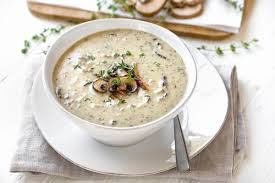

Mushroom Soup

Home
Mushroom Soup Recipe
To make the soup, sauté mushrooms in butter until they release their moisture and become golden brown. Add onions and garlic, cooking until fragrant. Pour in vegetable or chicken broth and bring to a boil. Reduce heat and simmer for 20 minutes. Blend the soup until smooth, then stir in cream and seasonings.
Ingredients:
- Mushrooms (500g)
- Onions
- Garlic
- Butter
- Vegetable or chicken broth
- Cream
- Seasonings (salt, pepper, thyme)
Steps:
- Sauté mushrooms in butter until they release their moisture and become golden brown.
- Add onions and garlic, cooking until fragrant.
- Pour in vegetable or chicken broth and bring to a boil.
- Reduce heat and simmer for 20 minutes.
- Blend the soup until smooth.
- Stir in cream and seasonings.